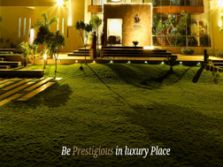

Backend Engineering
PHP application work with Laravel, Symfony, CodeIgniter, LeafPHP, and FlightPHP, including REST APIs and the structure those systems need to stay changeable.
Sargodha, Pakistan
Technical Lead |
Software & Infrastructure Engineer
Building scalable software. Engineering reliable infrastructure. Leading teams that deliver.
Profile
I have spent more than 11 years on the parts of software that have to keep working: backend applications, Linux servers, and the operational detail around them. That includes PHP systems and REST APIs, MySQL and MariaDB, and infrastructure on AlmaLinux and CentOS with Apache, Nginx, and Squid.
Production reliability is the through-line. I want to know how a service is configured, what to look at when it degrades, and which steps should be automated so they do not depend on memory. Where workloads belong in virtual machines, I use Proxmox, and I treat backups as part of the design.
Leadership, for me, is technical. I plan the work, review the code, and mentor engineers who are taking on harder problems. The aim is a team that can ship, explain its choices, and recover when production does something unexpected.
What I work on
The areas I am asked to own: backend architecture, Linux infrastructure, and the engineering practice around them.
PHP application work with Laravel, Symfony, CodeIgniter, LeafPHP, and FlightPHP, including REST APIs and the structure those systems need to stay changeable.
Linux servers in production, including AlmaLinux and CentOS, with Apache, Nginx, and Squid, and hosting panels such as Virtualmin and cPanel.
Proxmox VE for virtual machines and cluster management, and Proxmox Backup Server so recovery is part of the setup.
MySQL, MariaDB, and PostgreSQL, including Supabase, and query optimization when a feature is slow because of the database rather than the application.
Python, Node.js, Bash, and shell scripting, plus CI/CD where a repeated path should not stay a manual checklist.
Stripe, PayPal, cryptocurrency, and other payment methods, including checkout systems and fraud prevention as part of taking a payment rather than a later add-on.
Monitoring, troubleshooting, and the operational work of keeping a service understandable when it degrades.
Architecture, technical planning, code review, and mentoring engineers who are taking on harder problems.
Selected work
Two public websites are linked with the live URL. The practice areas describe production work in qualitative terms. They leave out client-confidential detail and any metric that has not been cleared for publication.
Public websites
Public project

Public project
Practice areas
Practice area
Practice area
Practice area
Practice area
Practice area
Practice area
Career
Employers, titles, and dates are as previously published on this site.
Tools
Named technologies only. No proficiency scores.
Public record
Public contributions, events, and repositories for usman342. Private work is not shown, and a quiet graph is not treated as inactivity.
Loading the public contribution graph…
Loading recent public activity…
Loading public repositories…
Recommendation
I have had the pleasure of working with Usman for more than 7 years, and I have been consistently impressed by his reliability, work ethic, and team spirit. He is easy to work with, polite, and respectful to everyone. A quick learner and is always eager to take on new challenges. In addition to his technical skills, Usman is a great team player and is always willing to share his knowledge and expertise with others and go the extra mile to help the team succeed. I have no doubt that Usman would be an asset to any team. He brings a positive work environment to the workplace.
Background
BS Computer Science
FSc (Pre-Engineering)
English
Urdu
Next step
If you are hiring, scoping a technical engagement, or want to talk through a production problem, write to me.
Sargodha, Pakistan